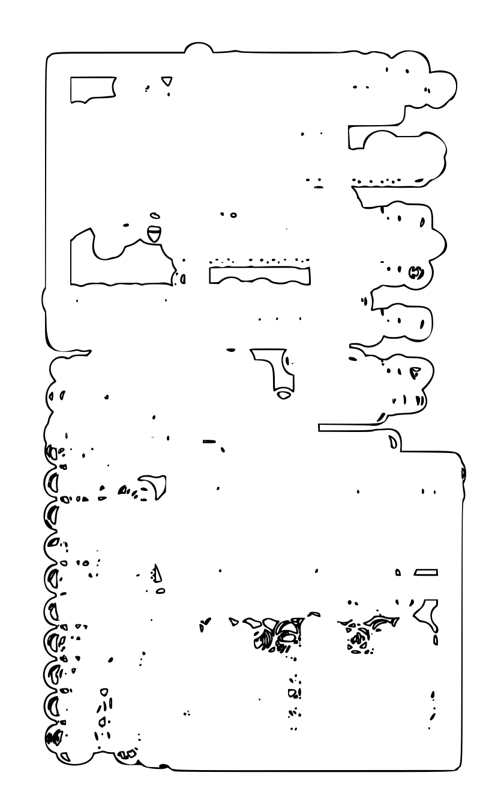
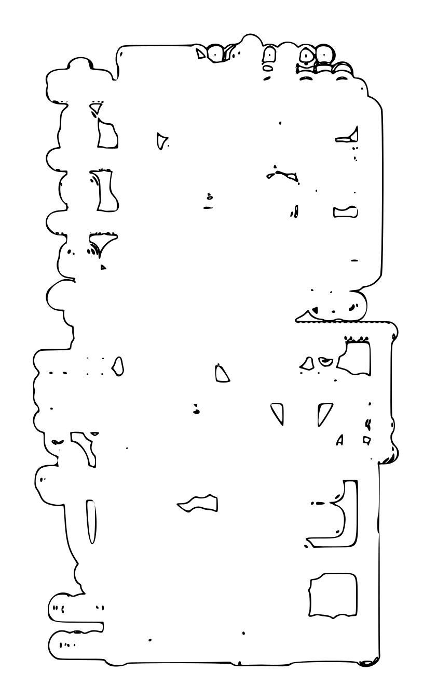
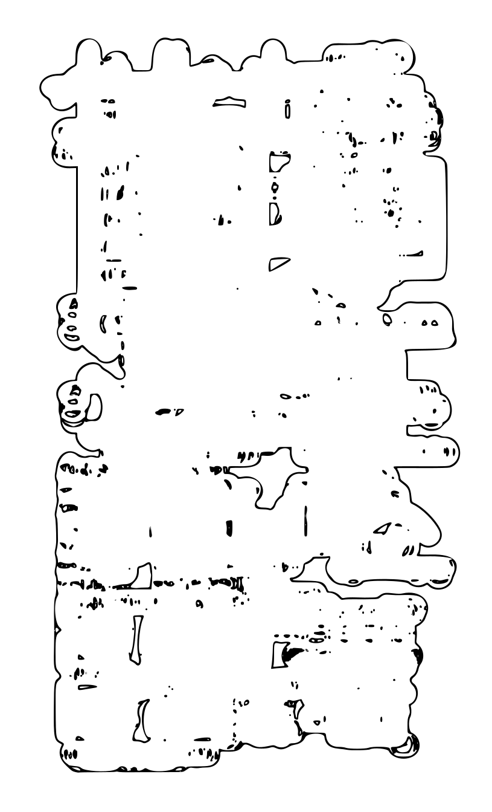

|  |  |  |
The task of the syllabus writer is to lay out "a summary outline of a ... course of study" (Merriam-Webster). They collect, curate, consolidate, and collage information, and then use its contours to craft an emptied-out space that can be filled by students. There is effort behind this emptiness, so students are faced not with a void but with a constraint, a container, a safe space in which to speculate.
These "speculative syllabi" are literal outlines of the collaged content of courses I have taught.
A "rebus" is "a riddle made up of ... symbols whose names resemble the intended words" (Merriam-Webster).
This "syllrebus," if you will, uses mathematical notation to encode the syllabus text. Red numerals can be read as the spellings of the number names. To get you started, the first line of the text can be deciphered as : "This course is not intended to be taught..."
Again returning to the role of "emptiness" in course design, this speculative syllabus plays with the concept of the empty set ∅. I offer a very thorough syllabus to outline a course about nothing.